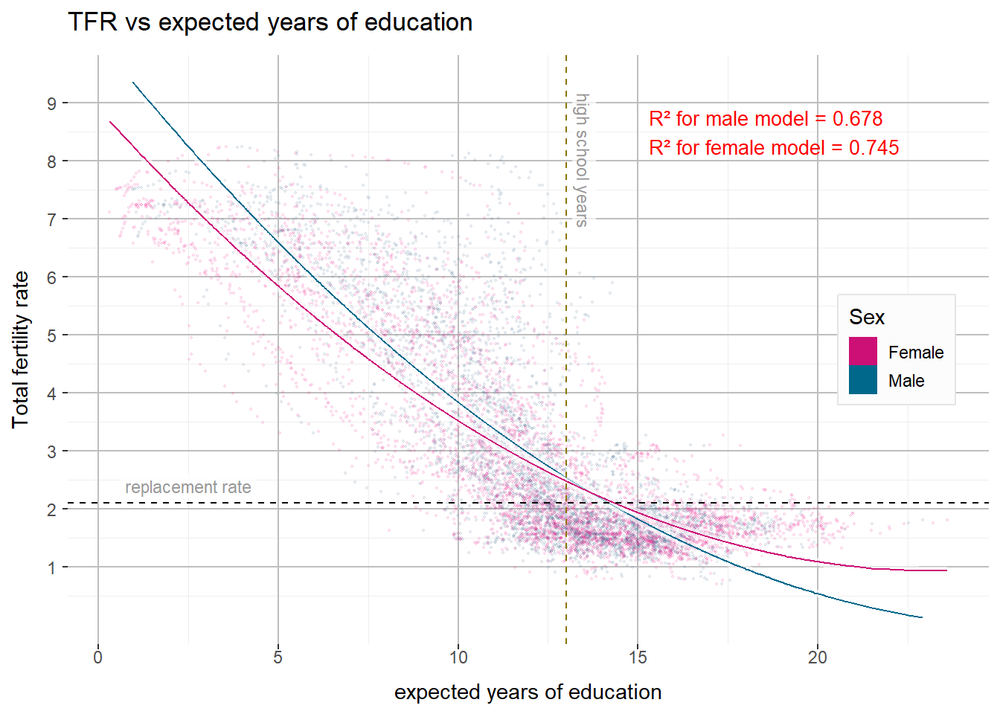
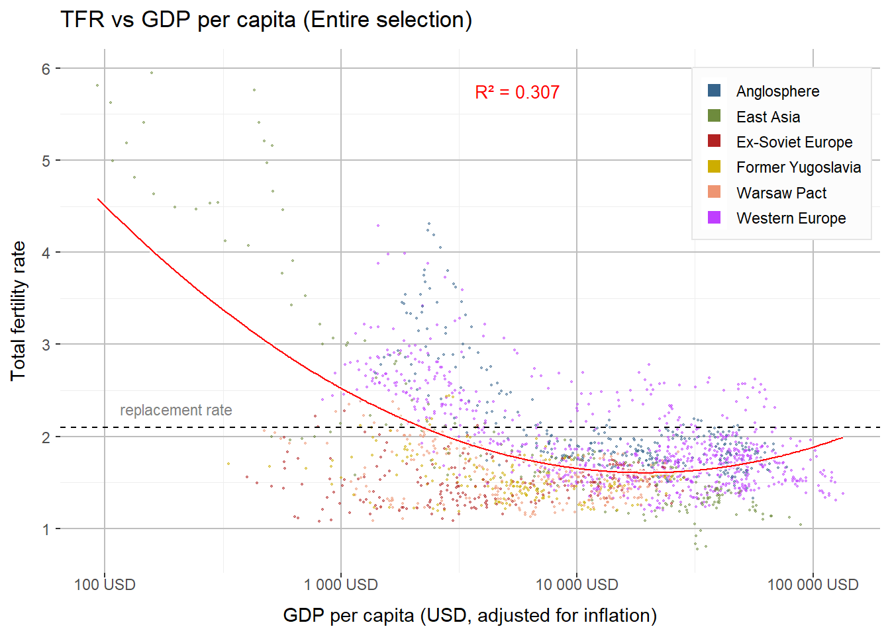

Report
Loading and cleaning data
The code will not appear on the .html file, but it is hopefully well-commented enough to explain what I’m doing.
Datasets
The original datasets in this report can be found both in the “Data” folder as in the World Bank and the OECD’s websites and they’re linked below.
Maps
All maps were taken from the “rnaturalearth” library.
Definitions
We first use the original NATO countries as a subset that could be interesting, since it narrows down the level of development and political system.
A color scale is defined below. It won’t appear in the .html file.
Baby Bust
Justification
During the 20th century, several efforts were made to increase or decrease birth rates; in China, during Mao Zedong’s rule, efforts were made both ways, through banning of contraceptives and a positive public discourse, and through the infamous one-child policy that followed the famines of the Great Leap Forward . Romania, however, had an even more infamous birth policy: decree 770, that mostly banned contraceptives and abortion, which, even if successful in its goal, had terrible economical and social consequences. Nazi Germany gave incentives to newly-wed couples to have children, and had one of the only positive1 eugenic breeding programs in history, Lebensborn. Democracies, however, have also meddled with births. For instance, France has promoted fertility since the 1930s with policies like the Code de la Famille, which provided financial incentives, extended maternity leave, and subsidized childcare to support larger families. These measures were later modernized to address economic challenges while maintaining a focus on family support. Similarly, Sweden is known for its robust parental leave system and affordable childcare, which aim to balance work and family life.
In fiction, concerns for fertility on a societal level have been explored by incredible works of art. One of them, Zardoz, a movie that features a post-scarcity society living anti-Nietzschean negative-nihilistic lives and that doesn’t have children anymore. Another one is the currently popular Handmaid’s Tale, in which fertility is a major theme, as it explores a world in a crisis caused by low fertility, through the perspective of women enslaved by a theocratic US government to be breeders. And, of course, this list wouldn’t be complete without mentioning Children of Men, about a chaotic, decadent world where no more children are born.
These stories were certainly inspired by the lowering birth rates in the real world. It should be noted that every single developed country today, with the single exception of Israel2, has sub-replacement fertility rates, despite most of them having strong social benefits for child-bearing. In this work, I will explore the reasons why these policies have failed, and possible policies that could be more effective while still respecting human dignity and right for choice, exploring the intersection between fertility, wealth, social class, work hours, cost of life, gender inequality, years of education, religion and retirement pensions.
1. A Sterile World
As previously stated, we can see that fertility rates have been dropping in the entire world for a long time, as we can see in the figure below.
The situation doesn’t look so dire, as the world is still above replacement level with a TFR around 2.3 in 2022. However, that doesn’t tell us the full picture. If we divide by region, as in the following figure, we can see that every region of the world except for the MENA and South Asia (which are roughly in equilibrium) and Subsaharan Africa (which is well above replacement rate) are very much below replacement rate.

These countries have been in a state of aging ever since the world wars, and many of them rely heavily on immigration, while others experience economic stagnation. Some of them have ridiculously low TFR. South Korea, in special, has around 0.7 children per women. That is a population that will be more than halved every generation and, needless to say, this isn’t sustainable on the long run.
2. Is it Gender Equality?
It is a common argument by people on both ends of the political spectrum (even if commemorated by one side and lamented by the other) that one of the causes is female emancipation and cultural changes on gender expectations.
However, it might be interesting to investigate this claim further.
2.1 Education Inequality
First, let’s plot some of these stats against fertility rates. We’ll use each observation independently, irrespective of country, to see the relation between gender inequality in education in fertility.
As r-square is above 0.5, we can confidently say that female education is fairly correlated to low birth rates. We must not forget, however, that correlation is not causation, and that more equitable levels of female education are still strongly correlated with wealth, industrialization and education in general.
Let’s repeat the same process only with NATO founding members (so as to compare more similar societies that went through similar economic and political processes), to see if we can observe anything interesting!
Now, not only the relationship stopped being a downwards trend, but we can observe that the r-squared value became much smaller, indicating that if you take only educated, western and industrialized countries, the relationship goes away, and suggesting that the real cause is something else.
Let’s first examine other two indicators of gender equality.
2.2 Labour participation inequality
First, female participation in the labour market

Now we’ve got an even lower relation!
Not only R squared is much lower (almost completely random), but the model isn’t even clearly getting larger or smaller values!
Just to be sure, let’s see what happens if we repeat the “NATO method”
Interestingly, the relation suggested is a positive relationship between female labour and fertility. But even though R-squared has increased, it is still quite low and it suggests that we should disregard this relationship.
2.3 Wage Gap
As a final investigation in the relationship between gender inequality and TFR in this document, we will repeat the same process with the wage gap.
Again a low R-squared value, indicating this relationship isn’t significant.
Since all samples are already western (or westernized) capitalist countries with modern economies that already share very similar societies and ways of life, there is no need to apply “the NATO method”.
2.4 So, is it?
Considering the low R values for all relationships but education, it is unlikely people are not having more children as a result solely of gender equality, and it is more likely the correlation is in education and not in the social status of women.
3. Education and Fertility
Considering the results above, maybe we should examine the impacts of education on tfr a little more closely.
If we analyse men and women separately and draw lines of reference for replacement fertility at 2.1 children per woman and for expected high school completion in 13 years of expected education, we can see the following:

Now we can see some interesting things;
First, that higher female education is unsurprisingly more closely related to low fertility than male education. We could also probably assume that male education is to a great degree related to fertility only because it follows female education so closely.
In second place, and probably most interesting, it seems there is a very sharp decline after completion of high school. In fact, it appears that around 13 or so expected years of study there is a sharp drop in fertility and that this single factor is the most important, while further years of study don’t affect it so much.
It would be interesting, however, to filter the richer, more developed countries, and focus in time-places that have already universalized school access as it is unthinkable to advocate for a policy of abolishing universal education.
Very interestingly, after we use the “NATO method”, the relationship goes away almost completely. In the previous plot, we could already observe that fertility was more or less stable after the threshold of 13 expected years of education.
4. Financial Wealth
Intuitively, most people associate wealth with low fertility. Stereotypes about the lower class or poorer countries having many children while the better-off do not. This is an interesting hypothesis to investigate, and we will plot it.
Here, we also see a relatively high correlation between GDP per capita and TFR. But the distribution is still very similar to the distribution of education vs TFR. This raises suspicions about this method: can we really universalize such measures? Are the effects of wealth and education similar in Saudi Arabia and the Netherlands? The “NATO method” used until now has shown that whenever we restrict our observations to the founders of NATO, we observe a great reduction of the predicting power of the factors in question. Even in the last figures of education we can observe that the highest observed TFR value for a NATO country (3 children per woman) is still considerably lower than the model prediction for its corresponding years of education and most of the observations around that education range. This issue raises a concern that all of these distributions might reflect region, culture and civilization instead of the factors directly plotted.
5. Culture
In order to get better, culture-adjusted models, we must first define our cultures. The UN has already grouped different regions in its metadata, and these regions were utilized in the second figure.
These, as you can probably notice, are merely geographical descriptors and aren’t very helpful to make it more specific. Does fertility work the same way in Australia and in Papua New Guinea? Or in Britain and Poland?
Let’s restrict our study and categorize these societies in a more useful way.
Since we could reasonably infer from the previous visualizations that underdeveloped countries have their fertility reduced by the universalization of high-school-level education and that Europe and East Asia have the lowest TFRs in the world, we will prioritize the global north in this study, and therefore pay special attention to the following countries:
- Anglosphere
- CANZUK
- USA
- Continental Europe3 (consistently liberal and democratic since the 1960s)
- Austria
- BeNeLux
- France
- Italy
- Nordic countries
- Switzerland
- Continental Europe (ex-Soviet republics)
- Baltic states
- Belarus
- Moldova
- Russia
- Ukraine
- Former Yugoslav Republics
- Bosnia
- Croatia
- Macedonia
- Montenegro
- Serbia
- Slovenia
- Kosovo
- Warsaw Pact Countries4(non-Soviet)
- Bulgaria
- Czechia
- Hungary
- Poland
- Romania
- Slovakia
- Capitalist East Asia5
- Japan
- South Korea
- Hong Kong
- Singapore6
5.1 Comparing the new regions
Let’s repeat some of the processes we did earlier, but with the new regions.
The first interesting thing we can notice here is that the former Warsaw Pact (including the Soviet Union) already had a relatively low birth rate much before the rest of the world, and also before the sexual revolution of the 1960s.
We can also notice that rates in the anglosphere were considerably higher than those in Western Europe, and much higher than in the Warsaw Pact.
Another very interesting thing is that our east asian group started with the highest TFR and ended the time period with the lowest.
A third interesting thing is that the formerly Yugoslavian countries didn’t have their rates visibly affected by the wars of its breakup (although we might investigate this further later).
5.1.1 Education
Let’s see how education affects the TFR of the regions selected.

This is a very low R² score, which indicates there’s barely any relation between education years and fertility (although the entire subset has relatively high expected years of education).
We used different colours for the different regions, and we can observe that not all regions are distributed the same way. In fact, East Asia is specially interesting.
So, let’s see how each of the regions is distributed.

Here, we can see that the East Asian group is the only one that has a clear relation between education and fertility, with a remarkably high R² value of 0.945! It is still interesting to note that the East Asian group did start with the lowest education levels in our subset, but there is almost no relation at all to be found in the other groups.
5.1.2 Wealth
Let’s repeat the process for data on gdp per capita.

Here, we can observe that, despite a relatively low R² value for the general selection, some groups display higher relations between wealth and TFR than others. Three of the groups display R² >~= 0.5. East Asia has again the highest value with R² = 893 (very significant in social sciences), surprisingly, the Anglosphere comes in second place with R² = 0.715, and, in third, Western Europe with R² = 0.499.
While one could argue about the visualization of the education data that, as one cannot see a similar pattern on any of the other groups, East Asia’s strong relationship between TFR and education could reflect the region’s transition to more western lifestyles and values7 and that they are not causally related, but the strong relation could be atributed to the passage of time (as the education levels generally consistently increased while the fertility levels generally consistently decreased).
We can, however, observe more complex behaviours in Eastern Europe, that went through several serious economic and humanitarian crises due to the end of the Cold War and the general Soviet-kept order in the eastern block, and started the second half of the 20th century with already relatively low TFRs.
6. Correlation between factors
It’s interesting to note that education and wealth seem to be highly codependent, so maybe we should analize how they’re related to each other. We will keep using the same set of countries as in the preceding section.
We can see here that correlations are generally moderate, but the relation between expected years of education and the base 10 logarithm of GDP per capita is the strongest among the variables that are not generated from the same data (that is, excluding relations such as GDP per capita vs log GDP per capita). This relation of 0.73 between expected years of education and GDP per capita is even higher than the relation of any of the variables with the “year” variable, indicating significance as years of education doesn’t seem to be a product of the “spirit of the time”, but of pure material prosperity. This also corroborates with the relatively lower relation to the gender imbalance in education (only a value of 0.58), which is especially interesting considering they’re highly related to each other (as women are half of the people counted in the total value for expected years of education).
Very curiously, none of the variables have a strong direct relation to fertility, except for the “year” variable, which has a Pearson’s correlation value of -0.42.
Conclusion
Generally speaking, the common sense ideas that the fall in fertility can be attributed to education and wealth is consistent with the data, however, gender equality doesn’t seem to be a big factor. Furthermore, if we restrict our focus to the global north, such factors seem to be less significant and further studies are required to identify factors that keep people from having more children in some of the most prosperous regions of the world.
Footnotes
“Positive”, in the context of eugenics, means the promotion of births for the desirable traits instead of the suppression of undesirable traits.↩︎
Interestingly enough, its counter-example is Iran, an Islamic theocracy with low birth rates, surrounded by theocracies with remarkably high birth rates.↩︎
Germany is excluded because half of it was socialist and that complicates our analysis, since the UN data does not differentiate between the former DDR and the BDR. Portugal, Spain and Greece were dictatorships for much of the 20th century.↩︎
Here we have to exclude Germany again for the same reason as above. Albania is excluded because it withdrew from the Warsaw Pact and I’m not sure where it fits best.↩︎
The UN does not recognize Taiwan as an independent country, so unfortunately it is not included in the dataset.↩︎
Technically not East Asia but only geographically so.↩︎
There’s only the slightest relation between this report and Yukio Mishima’s books, but he came to mind and I can’t recommend his books enough. One of the recurring themes in his novels is the western influence on Japan, which he explores in novels set both in the Meiji era as in post-war Japan. The Sailor Who Fell From Grace With the Sea features a single mother with a single child who owns a business that sells western imports, which seems relevant to the general theme. Would low fertility rates also be western imports?↩︎